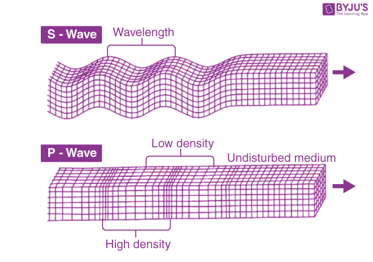

Introduction of Seismic Waves
When an earthquake happens, energy shockwaves known as seismic waves are released from the
earthquake's focal point. They shake the Earth and transform soft deposits like clay into jelly
for a short time (liquefaction).
Seismographs are used by seismologists to record how long seismic waves take to travel across
different layers of the Earth. Waves can be refracted and reflected as they travel through
varying densities and stiffnesses. Seismologists can deduce the sort of material the waves are
traveling through based on the differing behavior of waves in different materials.
The findings could provide a glimpse of the Earth's core structure, as well as aid in the
location and understanding of fault planes and the pressures and strains that act on them.
Seismic Waves Types
P-waves, S-waves, and surface waves are the three primary forms of seismic waves. Body waves refer to the combination of P-waves and S-waves.
Waves produced by Earthquakes
When an earthquake happens, it sends forth energy waves known as seismic waves. It's similar to the ripples that occur when a stone is thrown into the water. Seismic waves are similar to ripples that can flow through the earth's interior as well as its surface.
Wave Types of Earthquakes
Three primary forms of elastic waves cause earthquake shaking and damage. Two of the three reproduce within a rock mass. The main or P wave is the fastest of these bodily waves. Its motion is similar to that of a sound wave in that it alternately pushes (compresses) and pulls (dilates) the rock as it spreads out. These P waves can pass through solid rock, such as granite mountains, as well as a liquid material, such as volcanic lava or ocean water.
The secondary or S wave is the slower wave that travels through the body of rock. An S wave shears the rock sideways at right angles to the direction of motion as it propagates. S waves cannot propagate in the liquid sections of the planet, such as oceans and lakes, since liquids do not rebound back when sheared sideways or twisted.
The density and elastic qualities of the rocks and soil through which seismic waves flow determine their actual speed. The P waves are the first to be felt in most earthquakes. The effect is similar to that of a sonic boom, which rattles and knocks glass. The S waves arrive a few seconds later, shaking the ground surface vertically and horizontally with their up-and-down and side-to-side movements. This is the type of wave motion that causes so much structural damage.
What are Seismic Waves?
The energy that travels under the surface layer of the earth and causes an earthquake is called seismic waves.
A crack starts to open on a pre-existing point or line of weakness deep underground when an earthquake takes place. Stress builds over the surface of the earth as the crack grows on to become larger and larger. This energy causing the earthquake is known as seismic waves. Seismic waves transfer energy without moving material.
The crack grows with a speed of 2 to 3 km/sec. The level or size of the earthquake also depends on the area in which it takes place. The magnitude, that is, the size of the waves depends on the level of break or slip that has taken place under the surface. The process of cracks and slips taking place is known as Rupture.
So, the elastic waves that are formed are because of the rupturing that takes place deep underground and continues to grow at a very fast pace. The speed of this growth depends on their nature and the properties of the earth. Here is a fact for you: as we go deeper and deeper into the surface of the earth, the seismic waves found there are of higher density, pressure, and velocity.
Body Waves or ‘Through The Earth’ Waves are Further divided into Two:
P waves (for Primary waves) S waves (for Secondary Waves)
Primary waves are faster in pace, and Secondary waves are slower in pace. Surface wave earthquakes are very significant, too, as when they grow, they bring destruction to the surface of the earth where all the buildings and people live. It is mostly the energy formed by surface waves that can knock down big buildings.
P Waves (Primary Waves)
P waves are the fastest seismic waves of all and are thus called Primary ones. P waves grow or travel at a speed of 5 kilometers per sec through the earth’s crust. P waves are the first ones to reach any particular location or point when an earthquake occurs. The waves have a tendency to flow through all three i.e., solids, liquids, and gases. The materials that they flow through experience a force or energy that slightly pulls them apart and pushes them together. The same energy is experienced by a building when an earthquake occurs.
S Waves (Secondary Waves)
S waves are the second-fastest seismic waves and are thus called Secondary. The speed at which the S waves travel is almost half the speed of Primary Waves. S waves are the ones to reach any location after the primary waves when an earthquake occurs. Unlike Primary Waves, Secondary Waves make the material go through an up and down shaking movement from the sides when it flows through them. Unlike P waves, S waves can travel through rocks only.
 Learn what to do with video tutorials
Learn what to do with video tutorials